En esta pagina con tematica de articulo se expondrá sobre el djent, una corriente musical muy mezclada con el metal progresivo y otros subgeneros. Se abordarán sus caracteristicas principales, origenes, evolución, las bandas que han llevado el genero a su punto algido, así como su infuencia en la musica actual.
¿Que es el Djent?
El djent es un estilo de musica surgido a principios de los 90s en Suecia, aunque la explosión o popularización del genero no se dio sino hasta la decada de los 2000s gracias al internet y mas bandas que componían con este genero.
Este genero toma elementos del heavy metal y el metal progresivo y los combina con sus propias caracteristicas (las cuales son muy marcadas). Este genero se caracteriza por sus guitarras muy percusivas, distorsionadas y en especial por las bajas afinaciones de los instrumentos, combinadas con unas baterías que solo pueden ser descritas como salvajes y voces que van desde los gritos mas guturales hasta los cantos mas melodiosos.
Contenidos
¿Que significa la palabra djent?
La palabra djent está directamente relacionada con la esencia del genero; pues en este, las guitarras estan afinadas mucho mas grave de lo que deberían, usando afinaciones como drop Do (poner las primeras cuerdas en afinacion Re estandar y la ultima cuerda en Do) o en el peor de los casos, drop Sol o drop Fa, afinaciones ultra bajas, usadas en guitarras de 8 o 9 cuerdas.
Esto sumado a la tecnica de palm muting (mutear las cuerdas de la guitarra con la palma de la mano para reducir la intensidad del sonido) hace que la guitarra produzca un sonido que puede ser pronunciado con las letras djent, o eso fue lo que dijo Frederik Thordendal, descubridor de este sonido y de los protagonistas del siguiente punto.
Nacimiento del genero | Meshuggah
Muy seguramente te estés preguntando que tiene que ver ese nombre raro con el nacimiento del genero; bueno, resulta que meshuggah es una banda que fué creada en 1987, en Umeå, Sueica, en un principio tenían un sonido mas de trash metal que de djent, no fue sino hasta 1995 que lanzaron su albúm "destroy erase improve" con canciones como "future breed machine", "Beneath" siendo las mas representativas del album, en el cual empezaron a usar guitarras de 7 cuerdas con riffs mas graves y ritmos mas complejos, (entiendase complejos por usar patrones que se desplazaban sobre diferentes metricas) adelantando lo que se convertiría la banda.
Aquí quiero poner un inciso importante; despues del lanzamiento del "destroy erase improve" el bajista Peter Nordin, empezó a sufrir de vertigos y mareos, haciendo que cuando no pudiera tocar en los "conciertos", el guitarrista Mårten Hagstörm afinara su guitarra una octava mas grave para imitar el bajo, dandoles mucho mas cuerpo y potencia en vivo.
Esto nos lleva a 1998, al lanzamiento del album Chaosphere, en donde la banda llevaría mas lejos su experimentación, con canciones como "new millenium cyanide christ" la obra maestra y principal atractivo del album, en donde se consolidó el sonido complejo, grave, percusivo y extremo de meshuggah y el djent como tal. Este disco fue un exito de su momento, y fue tan sonado que la banda Slayer los invitó a una gira fuera de europa, mas especificamente a estados unidos, gira en donde se harían mucho mas conocidos; gracias a esto la banda tool (otra banda que lleva la combinación de matematica y musica al extremo) los invitaría a otra gira y luego terminarían en AustFest de 2002, su primera aparición en un esenario popular. Su siguiente album "Nothing" también tendría una gran importancia, pues aquí empezaron a usar guitarras de 8 cuerdas, y este album terminó en el puesto 165 de la lista Billboard de ese año.
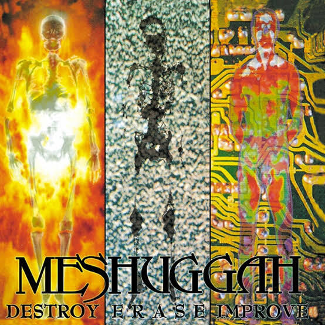
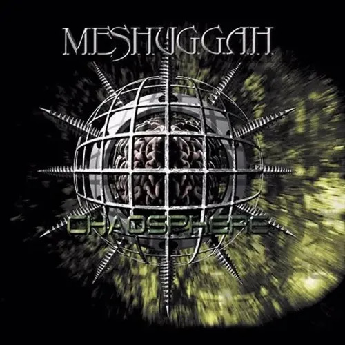
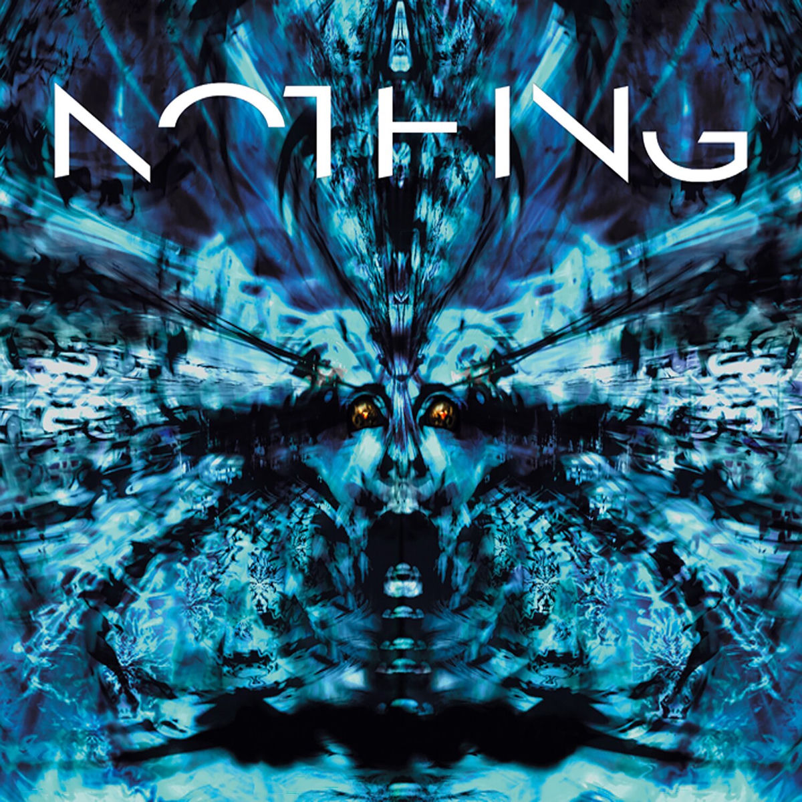
Saltando un par de años, entre 2008 y 2012 llegamos a los discos ObZen y Koloss, el estrellato definitivo para la banda y el techo en su creatividad, estos serían de los mas famosos y vendidos de la banda, siendo Obzen el mas popular y con las canciones mas reproducidas, y Koloss el mas vendido, ambos con sus canciones insignias siendo "Bleed" y "Demiurge" respectivamente, aquí fue donde meshuggah alcanzó la cumbre en popularidad. Cabe resaltar que en este periodo sacaron un disco en vivo, y por los ya mencionados fueron nominados por segunda vez a los grammy suecos, aunque no ganaron
Llegando a la etapa final de meshuggah, en 2016 sacaron el album "The violent sleep of reason" el cual sería aclamado por la critica por canciones como "born in dissonance", "clockwords", y la cancion homonima del album (Es importante mencionar que meshuggah se había hecho tan popular que la cancion "clockwords" había sido nominada a mejor cancion de metal de los premios grammy, pero otra vez, no ganaron). Ya para finalizar, en 2022 sacarían su ultimo album, "inmutable" album el cual dividió a los fans de la banda, pues hay unos que lo califican como el peor y mas desepcionante album de la banda, y otros que de igual manera que los anteriores, le dan excelentes criticas.
En conclusión, sin meshuggah, este genero musical jamás, o muy dificilmente habría surgido, y muy probablemente lo hubiera hecho de una manera diferente; meshuggah marcó un antes y un despues en el metal a travez de su trayectoria, experimentando con estructuras ritmicas y afinaciones que nadie había pensado en utilizar, haciendo que dieran forma a un sonido completamente nuevo y diferente a todo lo escuchado en su momento; por esto, su importancia no se encontra unicamente en la musica que crearon, sino en que abrió el camino para que nuevas bandas pudieran experimentar y desarrollar sus propios estilos.
Popularización
Como te diste cuenta, meshuggah fue la banda djent por excelencia, pero la popularización del genero se debió a otros factores. Nos ubicamos en la decada de los 2000, el internet es el boom del momento, con plataformas para compartir toda clase de contenido como YouTube y muchos foros en donde la gente habla de muchos temas; es gracias a esto que el djent de meshuggah y otras bandas que surgían en el momento se hicieron populares, llevandolos a un publico mucho mas amplio; algunos de los grupos alcanzados por este impulso fueron: periphery, animals as leaders, TesseracT y Monuments, grupos que hacían uso de las caracteristicas del djent como guitarras graves y ritmos muy complejos.
Otro factor importante fue el crecimiento del metal progresivo en la epoca, este sub genero del metal llevaba la complejidad ritmica (y en algunos casos armonica) a otro nivel; esto gracias a que ambos sub generos tenían las muy complejas estructuras rítmicas en común.
En el siguiente vinculo se muestra al baterista Mike Portnoy de la banda Dream Theater (una de las mas reconocidas dentro del metal progresivo) mostrando los diferentes compases de una de las canciones mas complejas que la banda hizo "Dance of eternity" | Ver desde el segundo 40
Como ultimo factor importante, yo pondría el hecho de que el djent fue y es un genero muy reconozible, hay pocos subgeneros del metal que consiguen esto, pues la mayoría primero, tiene nombres algo confusos como grindcore, proto-metal, folk metal, metal gotico, groove metal y una infinidad mas, cada uno con caracteristicas que entre tantos subgeneros, se mezclan unas con las otras, en cambio el djent además de tener un nombre muy reconocible, su esencia es: gitarras graves, baterías con doble bombo a tope, y guturales.
¿Que hace que una canción suene djent?
Esta es una pregunta un tanto extraña, pues a lo largo del articulo se han repetido muchas veces las caracteristicas del djent, así que para esta sección vamos a hacer algo distinto, veremos que hace cada instrumento y como lo hace para vizualisar mejor este punto.
Es un buen momento para explicar que es la armonía, la melodía y la ritmica en una canción, pues estos tres son los pilares en los que se funda cualquier obra musical:
La armonía es el conjunto de dos o mas notas que al tocarlas al mismo tiempo dan como resultado un acorde (Do Mi Sol da el acorde de Do mayor), los acordes funcionan como acompañamiento dentro de la cancion, dan contexto y/o soporte emocional la melodía.
La melodía es una suseción de notas que son tocadas o cantadas una tras otra.
El ritmo es la organización y distribución del tiempo y los silencios en la musica, se compone del pulso, acentos y el compás, una forma de vizualisarlo es que al escuchar una canción, voluntaria o involuntariamente movemos la cabeza o el pie marcando el tiempo
Guitarras|Riffs
En muchas canciones ya sea de rock, metal o cualquier otro genero, la armonía (los acordes de la canción) sigue un patron y estructura estable, como por ejemplo: la secuencia de acordes usada en el coro de la canción "Aserejé" de las Ketchup, la cual es: Re# La# | Re# La# | Do# Sol# | Do# Sol# (el numeral al lado de la nota indica que pertenece a las teclas negras del piano, osea las notas sostenidas); En el djent, los acordes, aunque estan presentes no se usan de la misma manera, mas bien pierden protagonismo para pasarselo a los riffs , que en ves de ser notas que al tocarlas todas al mismo tiempo dan como resultado un acorde, (ejemplo, si tocamos las notas Do Mi Sol en el piano, suena un acorde de Do mayor) son frases musicales cortas, melodicas o ritmicas que se repiten a lo largo de una canción (un ejemplo de esto es la canción "enter sandman" de metallica, pues esa frase de guitarra que se repite casi en toda la canción, es un riff); solo que eso de cortas esta de más; en una canción común en donde hay un riff, como la ya mencionada, dicho riff es corto y de hecho hay veces que es acompañado de acordes, pero en el djent no, pues si bien hay veces que esta acompañando acordes, el riff al ser de las partes mas importantes de la armonía no es corto y es de las cosas que mas resaltan de la canción.
El bajo, como indica su nombre, tiene que aportar las notas graves dentro de una canción, esto es así porque en la musica las notas graves son las que guían a la banda, son como el piso en donde todo el mundo esta parado, por eso existe el chiste de que si el bajo se equivoca durante una canción se lleva a todo el mundo con el, pues todos se guían por el bajo, (vease en la canción de las Ketchup, si prestan atención en la introducción, uno de los instrumentos que mas resalta, es el bajo), ahora, dependiendo del genero, y la canción, el bajo es de los instrumentos mas "estaticos" pues por lo explicado anteriormente, dependiendo del contexto puede hacer mas o menos cosas dentro de la canción, va a haber veces que pueda hacer arreglos o lineas exclusivas de el, asi como también va a estar obligado a tocar las mismas 4 notas durante toda la cancion; bueno, en el djent todo esto aplica a medias o directamente no aplica, pues debido a la naturaleza del genero, el bajo normalmente hace las mismas estructuras melodicas y armonicas que las guitarras, además de fusionar elementos rítmicos; osea que en la mayoría de los casos va a hacer el mismo riff que las guitarras para darle mucho mas cuerpo. Obviamente el bajo sigue siendo el bajo, asi que en las partes en donde la canción lo requiera, este volverá a dar el acompañamiento mientras las guitarras hacen algo diferente.
En la musica en general, la batería (o los instrumentos ritmicos) es de lo que mas importa, pues tiene muchas funciones fundamentales, aquí algunas: establece el pulso y por ende dicta la velocidad de una canción; aunque no parezca, junto al bajo es de los instrumentos que mas "manda" dentro de la canción, pues aporta la dinamica y el groove, haciendo que haya partes mas intensas y explosivas o mas calmadas, tranquilas y contenidas, esto dependiendo de la fuerza de los golpes y que tambores y platillos se esté usando; también marca las transiciones a las diferentes partes de la cancion como el coro, el puente, etc, esto lo hace mediante los fills, frases cortas muy variadas que dan mas impulso o dinamica a las transiciones, también acompaña y da impulso al bajo y/o las guitarras, entre muchas otras.
La batería es un instrumento que se basa en la presición; precision en la fuerza, cantidad y velocidad de golpes, a la hora de realizar los fills y al mantener un pulzo estable durante toda la canción, esto en el djent se lleva a otro nivel; como recordarás cuando hablamos de las guitarras, dimos a entender que los riffs son parte fundamental del genero, por ende, la batería al igual que el bajo también se encuentra estrechamente relacionada con estos. En una canción djent la batería acompaña los riffs de una manera especial, pues al estar construida al rededor de los mismos, sus golpes estan dispuestos para acentuar lo mas que se pueda dichos riffs o algúna parte en estos, osea que es parte fundamental en la sensación de peso de las guitarras. ¿Y que tiene que ver esto con la presción? El djent en muchas ocasiones presenta mucha información ritmica en distintas formas y por distintas razones; ya sea por un tempo elevado, la cantidad o manejo que se le da a las subdivisiones (las subdivisiones indican si el compás se divide en 1/4s, 1/8s, 1/16s y hasta 1/32s, entre mas grande el denominador, mas rapido hay que tocar, como se vió en el video de "Dance of eternity"), o la propia composicion de los riffs. Es decir, no necesariamente se necesita una cantidad muy grande de BPM para que las guitarras, el bajo y la batería hagan muchas cosas muy rapido, pero en la batería esto es especial; pues por la propia naturaleza del instrumento, tocar muchas cosas muy rapido puede ser mucho mas exigente que en los otros instrumentos, es aquí donde entra la precisión del baterista, pues los golpes que da no solo los tiene que hacer fuertes, sino que deben caer en su lugar correspondiente en el compás y en la gran mayoría de los casos estos golpes los tiene que hacer coincidir con los ataques de la guitarra; un golpe mal ubicado o con la potencia insuficiente puede hacer que las guitarras y el bajo pierdan mucha contundencia, en especial cuando estos tres hacen la misma figura ritmica o cuando por la composición de la canción las distintas figuras que hacen se complementan, lo cual es de las peores fallas que se pueden cometer.
Es por esto que la batería en el djent se siente tan compleja, incluso cuando el patron que se usa no parece tan complicado a primera vista; lo dificil aquí es hacer todo lo mencionado anteriormente al mismo tiempo, pero si se ejecuta correctamente, puede dar como resultado una sintesis de los instrumentos que se ve en pocos generos. En el primer link se encuentra un cover de batería de "De musica ligera" de Soda estereo, una canción en donde la batería es sencilla y cumple su funcion de acompañar y soportar la banda, en el segundo, se ve un cover de la canción "bleed" de Meshuggah con la partitura, canción en donde prácticamente en ningún momento la batería deja de acompañar al bajo y las guitarras
Si bien esto pasa en toda la musica, la manera unica en la que se mezclan los instumentos al trabajar sobre diferentes composiciones, dentro del djent, es lo que le da su identidad y autenticidad, la forma (aunque no parezca) prolija en la que cada instrumento hace su trabajo da como resultado ese sonido pesado, grueso y preciso del djent.
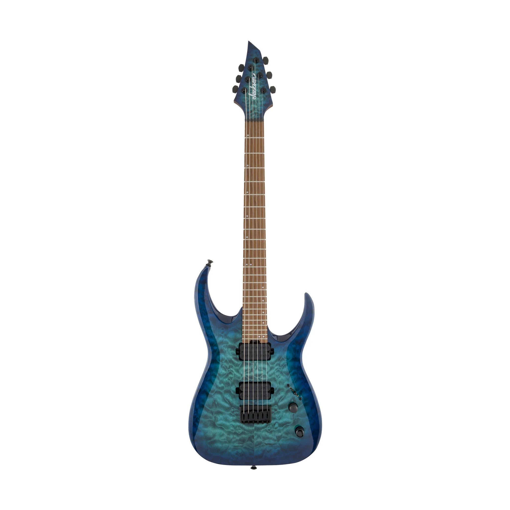
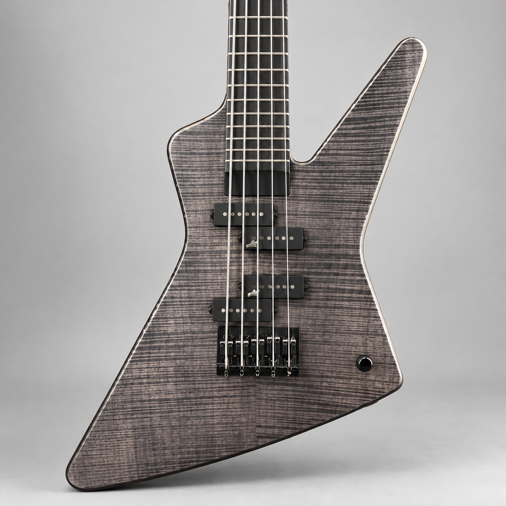
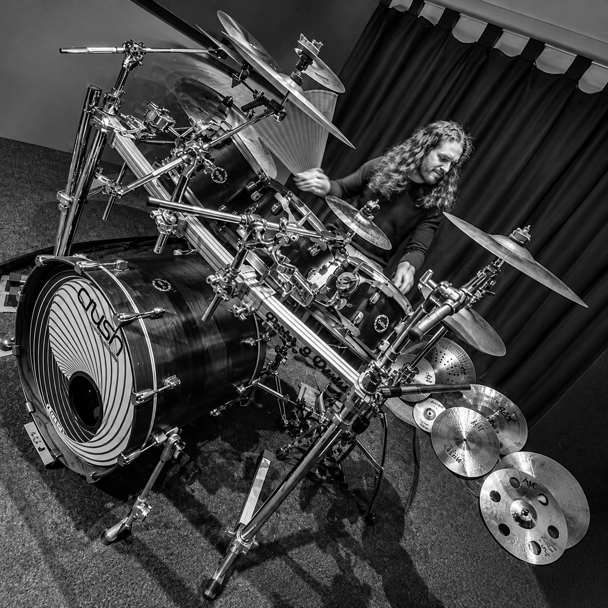
Complejidad del djent
Este punto esta estrechamente relacionado con el anterior, solo que en este vamos a hablar sobre polirritmos, afinaciones, palm-muting, compases irregulares y muchas otras cosas; solo que al igual que en el punto anterior, lo dividiremos en tres puntos, complejidad melodica, armonica y ritmica.
Complejidad melodica
Antes que nada, recordemos que la melodía es una suseción de notas que percibimos como una frase musical, en el djent, esto tiene varios matices pues las melodías instrumentales, no son las protagonistas del djent como si lo son por ejemplo en la musica clasica, el jazz, las baladas romanticas, la musica de ambientación en las peliculas o similares.
Si bien, estamos hablando de la parte instrumental del djent, no podemos dejar de lado la voz, pues como en casi cualquier otro genero, es lo que a primera vista destaca mas. Si bien bandas como Meshuggah, Born of osiris y similares basan casi todas sus voces en guturales, hay bandas como TeseracT o Periphery que mezclan sus guturales con lineas vocales muy melodiosas; Diría que si se quiere reforzar el sonido pesado que este genero ofrece de por si, el primer caso (en donde las voces se basan en guturales) es el que una banda debe buscar. Pero si se quiere "complementar" de alguna manera el sonido pesado, darle equilibrio y una mejor dinamica (aunque esto es subjetivo, pues una canción con pocas melodías vocales puede en ocasiones superar a una que si las tiene) la segunda opcion puede ser mejor.
Volviendo a la parte instrumental, en realidad, en lo que a melodias en el djent se refeire, tenemos poco y nada que decir puesto que los riffs hacen todo el trabajo; las melodías en el djent hacen un trabajo de ambientación y generan la atmosfera que los compositores quieran, traducido, las melodías adquieren el papel de acompañar en los momentos necesarios, pero no es la protagonista como lo sería en otros generos (podríamos decir que las melodías vocales, los solos y los riffs que tienen tintes melodicos como wax wings son la unica parte melodica del djent que si llega a ser protagonista) por eso, a continuación dejamos unos ejemplos de canciones en donde tanto las voces como los instrumentos tienen lineas melodicas:
Aquí explicaremos algunos de los temas vistos en el apartado de los riffs, aunque obviamente no serán los mismos. Empezando por el palm-muting, una tecnica en donde se pone una parte de la mano (la parte lateral izqierda de la mano) sobre las cuerdas para mutearlas; el proposito de esto depende del genero en el que se use, por ejemplo, en el rock o el metal se puede usar para acompañar y no resaltar tanto o crear dinamica, en el djent es parecido, pero está muchísimo mas presente que en otros generos (pues como se vió al principio del articulo, fue la combinación del palm-muting y las afinaciones graves la que creó este genero); esto se debe a que el palm-muting ayuda a las guitarras a sonar mas percusivas y conectar mas con el bajo y la batería, pues recordemos que el djent al usar patrones ritmicos complejos, polirritmias, sincopas, silencios, etc, necesita sobre la base solida que ya tiene resaltar armonicamente esto que acabo de mencionar, y lo hace a travez del palm-muting.
Las notas y acordes abiertos junto con las inversiones y disposiciones de acordes poco comunes son recursos que dependiendo de la banda, se usan mas o menos, pues hay bandas como Meshuggah, Humanity´s Last Breath, etc, que definitivamente NO usan acordes o notas abiertas en sus canciones, pues estas representan el djent en su faceta mas pura y pesada; pero hay bandas como Periphery, TesseracT, Animasl As Leaders, The contorsionist y muchas otras que utilizan bastante estos dos recursos, aunque cada una tiene su propia manera de incorporalros a su musica. Empezando por las que para mi son las bandas mas populares en usar esto, tenemos a TesseracT y Periphery; en la primera, el guitarrista Acle Kahney utiliza acordes ultra complejos, pues usa extensiones propias del jazz combinadas con afinaciones unicas que dejan cuerdas agudas al aire que contrastan con las figuras, patrones y digitaciones de las notas graves. Los tres guitarristas de Periphery tienen un abanico muy grande de recursos e ideas en lo que a este tema se refiere, de hecho ellos popularizaron lo que la comunidad conoce como el "djent chord" (el acorde djent) que es un acorde mayor 9 invertido, un tanto disonante pero muy colorido. En canciones como Scarlet, Wax wings, All new materials, Ji, Reptile y muchas otras hacen uso de acordes abiertos muy raros o notas abiertas durante los riffs, algo que los caracteriza. Por ultimo me gustaría mencionar el estilo único que tiene Animals as Leaders para esto gracias al selective picking (una tecnica que selecciona que notas toca el pick y cuales son hechas a traves de hammer-on y pull-off con la mano izquierda) y el thumping (lo parecido al slap del bajo), ejemplos de esto los encontramos en las canciones Kascade y Physical education, en donde se utiliza el selective picking y el thumping junto con notas abiertas para dar un sonido unico.
Los silencios y las paradas son una parte fundamental del djent; A diferencia de otros estilos, en donde la armonía mantiene una "pared" de sonido continua, en el djent se usan para generar mucho contraste, pesades y presición. Uno de los aspectos mas importantes en lo que a silencios se refiere es la "simbiosis" con el bombo. Para que las guitarras graves y distorsionadas no se vuelvan una bola de ruido inentendible (ademas del palm-muting) se utilizan muchos silencios que son llenados o acompañados por el bombo para crear riffs mucho mas rítmica y armonicamente definidos. (podríamos decir que las guitarras y el bajo son instrumentos tonales ritmicos en el djent) Algo genial que se crea al jugar con los silencios en la composición, además de jugar con las expectativas del oyente, es el desplazamiento de patrones. Imaginemos que tenemos un riff que consta de un patron esticto por uno o dos compases, al tercero, se le puede sumar un silencio mas o menos corto (dependiendo de lo que quiera el compositor) para desplazar ese patrón mientras la batería sigue sin ninguna alteración, esto se puede hacer las veces que se quiera y no necesariamente con silencios, sino con mas notas al inicio o final de un compás para desplazar el riff; inclusive, la batería puede invertir los acentos para que la canción quede "patas arriba" o crear un silencio o un acento al inicio o final del compás y que sea ese instrumento el que quede desplazado y no los otros; trucos como estos se pueden ver en las canciones "Bleed" o "Insomnia" de Meshuggah y Periphery respectivamente.
Ya para finalizar este apartado, aquí no se volverá a tocar el tema de los silencios, a pesar de estar estrechamente relacionados, aquí explicaremos mas a fondo que es un compás y como estos pueden ser regulares o irregulares, veremos polirritmias y polimetrías mas a detalle y como el djent incorpora todos estos aspectos dentro de sí.
Primero y de lo mas importante, ¿Que es un compás? ¿Que significa que algo esté en 4/4, 11/8 o 7/8? ¿Enserio es tan importante? Bueno, lo explicaría aquí pero es un tema muy extenso y que por escrito es dificil de explicar y entender para el lector, así que si quieres entender de aquí en adelante, obligatoriamente tienes que ver estos videos EN ORDEN:
En resumen, imagina que un compás es una caja, los numeros (4/4, 7/8 etc) al principio de la partitura te indican que tan grande y cuantas cosas le caben a la caja, en un compás de 4/4 caben 4 negras (y sus equivalentes), en uno de 11/8 caben 11 corcheas (como ya viste, en el caso de los compáses irregulares hay que acentuar la primera figura de cada grupo en el que se haya sub-dividido la división original) No podemos meter cosas mas grandes de las que la caja soporta porque nuestra composicion sencillamente no funcionaria. Teniendo esto claro, pasemos con las polirritmias.
Una polirritmia ocurre cuando se mezclan distintos patrones ritmicos para que suenen al mismo tiempo; normalmente se representan así 3:2 osea, tres golpes contra dos. (intenta hacer continuamente dos golpes con una mano y tres con la otra al mismo tiempo, eso es una polirritmia). Osea, una superposición de dos o mas ritmos independientes que ocurren en un mismo compás; La dificultad de esto aumenta si cambiamos las polirritmias o si sumamos mas ritmos, por ejemplo 7:5 o 5:6:7. Lo estoy exponiendo de manera muy simplificada, pero piensa que un baterista está a otro nivel cuando trabaja con polirritmias, tu intenta hacer ese patron de 3:2 con las manos e inviertelo con los pies (si estas haciendo los tres golpes con la mano der y los dos golpes con la mano izq, intenta que hacer tres golpes con el pie izq y dos golpes con el pie der) y vas a ver que es casi imposible. Un baterista puede hacer un polirritmo muy complejo como el que se ve en un fragmento de la cancion "Rosseta Stoned" de la banda Tool, que es un 5:3:4, que numericamente se ve facil, pero tocado se ve así:
En general, el concepto de las polirritmias no cambia, y las polimetrías funcionan muy parecido: Visto en el ejemplo de Stengah de Meshuggah, la guitarra hace un patron de 11/8 mientras la batería hace un patron de 4/4, eso es una polimetría, poner distintos compáses a sonar al mismo tiempo; el resultado es una ilusión auditiva muy extraña, como si la canción se fuera a botes o simplemente aunque mas que intentemos sincronizar o hayar una sub-división estable dentro del tiempo, no podamos. Debido a la complejidad y diferencias de interpretación que hay a la hora de escuchar musica con estas caracteristicas, a continuación dejaré ejemplos de canciones que usan polirritmias y polimetrías, dependiendo de en donde busques o a quien le preguntes, lo que escuches puede tatarse de la una o la otra:
Se que en este apratado fuí breve, pero explicarlo es mas facil que aplicarlo en la musica, podría poner otro texto en donde explico como se usa esto en el djent, pero repito, dada la sencillez con la que se explica este tema, no lo veo necesario.
Grandes exponentes
Además del indiscutible padre del genero osea, Meshuggah, hay otros muchos grandes exponentes del djent, como Periphery, fundada por el guitarrista y productor Misha Mansoor, fue fundamental para llevar al djent a una escena musical mas reconocible durante los 2000, y aunque no poseen algún premio o galardón formal, El sencillo "The price is wrong" Cuenta con una nominación a "best metal performance" en la 59° edición de los Grammy Awards, junto a albumes que son aclamados por la critica. Algúnas de sus "contribuciones" o innovaciones en el genero son: incorporar melodías vocales mientras los instrumentos hacen figuras ritmicas, armonicas y melodicas complejas, combinar el djent con el metalcore, metal progresivo y elementos electronicos y de sintetizador, además de ser reconocidos por hacer grabacion y producción musical casera.
Animals As Leaders, liderada por el guitarrista Tosin Abasi, introdujo tecnicas del jazz fusion, math rock/metal y musica instrumental al djent, además de implementar thumping, selective picking, experimentar con polirritmias y polimetrías extremas e independencia de las voces para hacer sus melodías. Es de mencionar que popularizaron las guitarras de uso extendido (8-9 cuerdas) mostrando el potencial musical que estas tenían y como es de esperarse, ayudaron a popularizar el djent en otra faceta y en otro nicho.
TesseracT dió una interpretación mas ambiental, melodica y atmosferica al djent, pues al igual que Periphery, implementó melodías vocales en sus canciones, usaron efectos mas ambientales en sus instrumentos para dar matices y textura a su musica, hicieron casi todas sus composiciones basadas en contrastes de secciones pesadas y tranquilas, además de jugar con estructuras progresivas y muchos cambios ritmicos. Fue el bajista Amos Williams quien popularizó el sonido metalico y sumamente presente durante las canciones, y es una banda que usa muy comunmente las polimetrías.
Vildhjarta desarrolló el djent en un ambiente mas oscuro y disonante, implementó afinaciones extremadamente graves, disonancias muy marcadas y armonías inquietantes, riffs con acentos irregulares y cambios ritmicos, además de incorporar elementos del metal extremo en su interpretación del djent.
Aquí una especie de mención honorifica a bandas que también contribuyeron al djent o sencillamente vale la pena conocer: After the Burial, Sikth, The contorsionist, Intervals, Born of Osiris y Erra. Puedes investigar que otras bandas djent poco conocidas son buenas.
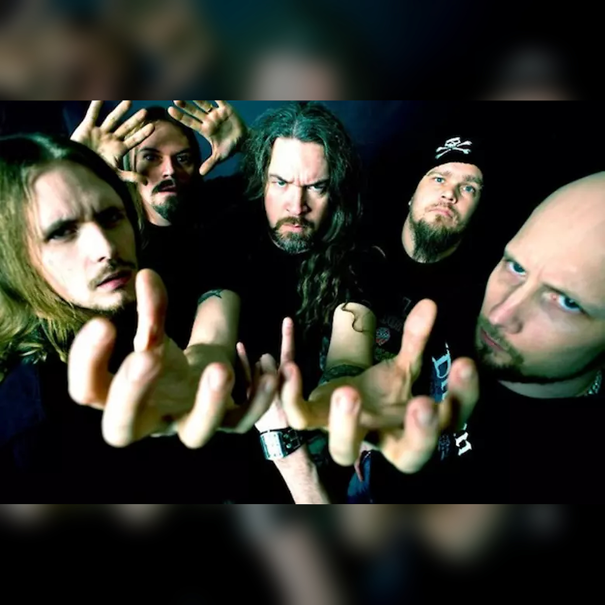
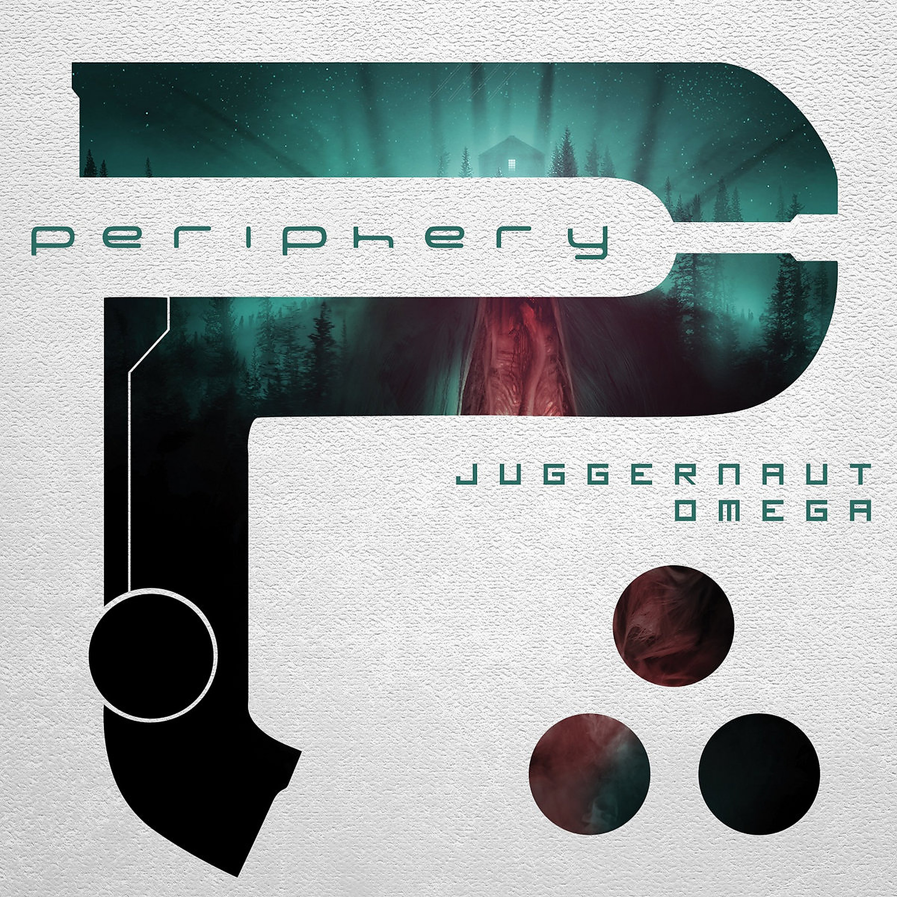
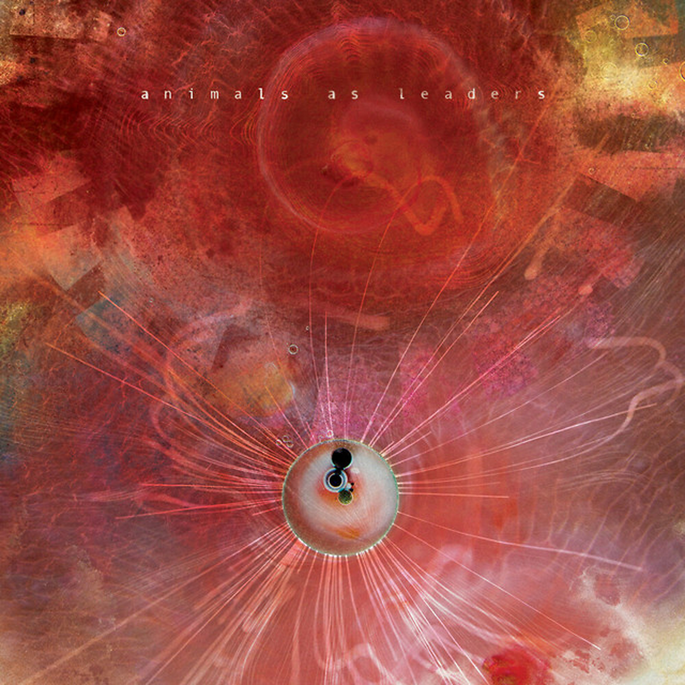
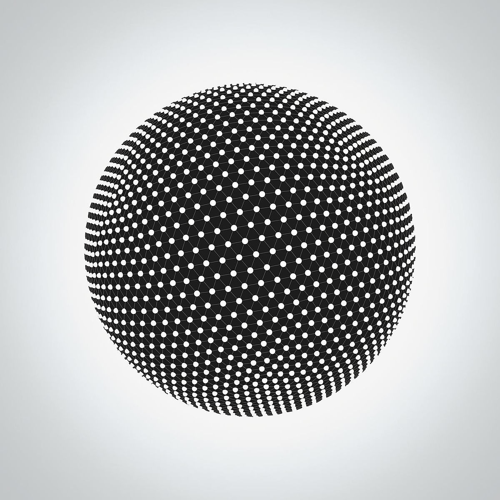
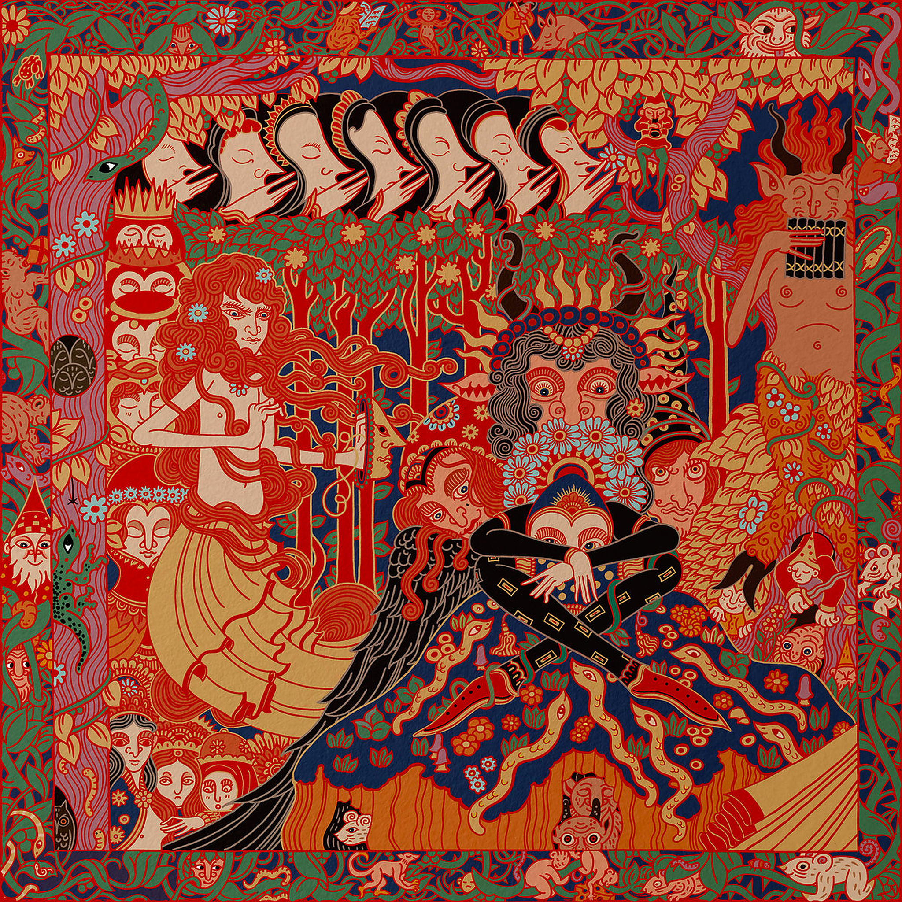
¿El djent es un genero en toda regla?
Si bien, el djent no es estrictamente un genero, sino mas bien una corriente derivada del metal progresivo y otros sub generos, su impacto y popularidad en la escena musical del metal es innegable; Sus aportes no se limitan a una caracteristia sonora especifica como las afinaciones graves, riffs sincopados y el uso de polirritmias y polimetrías, también a influido en la manera de componer, escuchar y entender el metal moderno.
Por ende, su clasificación como genero es debatible, su trayectoria, impacto, evolución, popularización y contribuciones le dan una base bastante solida para ser considerado mas que una tecnica o tendencia. Siendo objetivos, quizá el djent no haya nacido como un género en toda regla, pero su desarrollo ha demostrado que tiene el potencial para llegar a serlo.
Muy bonito y todo, pero si me preguntas a mi, no me gusta llamarlo genero, no porque no pueda llegar a ser considerado uno (como ya vimos) sino porque conservar el hecho de que haya sido una tecnica que evolucióno hasta lo que es hoy en día y lo que puede llegar a convertirse, me parece gracioso, ironico y motivo de "orgullo" (supongo). En fin, como dice el nombre de un album que me gusta mucho: